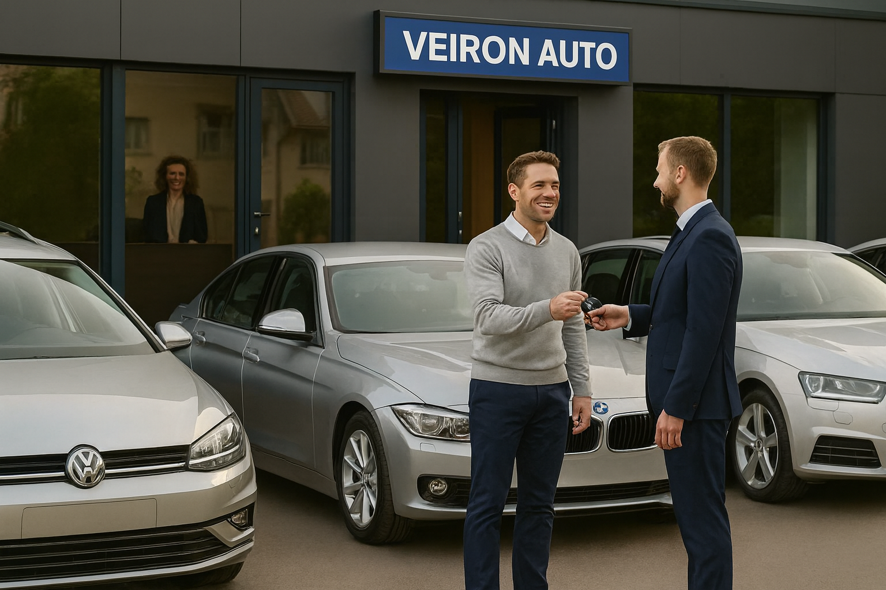

Veiron Auto a luat naștere în 2012 din dorința de a oferi servicii de mobilitate la cele mai înalte standarde pentru clienții din Satu Mare, Maramureș, Cluj, Bihor și regiunile învecinate.
Ne-am specializat atât în închirieri auto rapide și flexibile, cât și în asistență completă pentru constatarea și soluționarea daunelor auto.
Misiunea noastră este să facem deplasarea și rezolvarea oricărei probleme auto cât mai simplă, rapidă și lipsită de stres pentru fiecare client.
